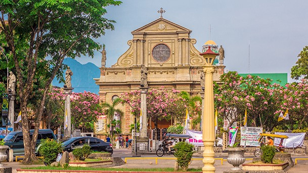
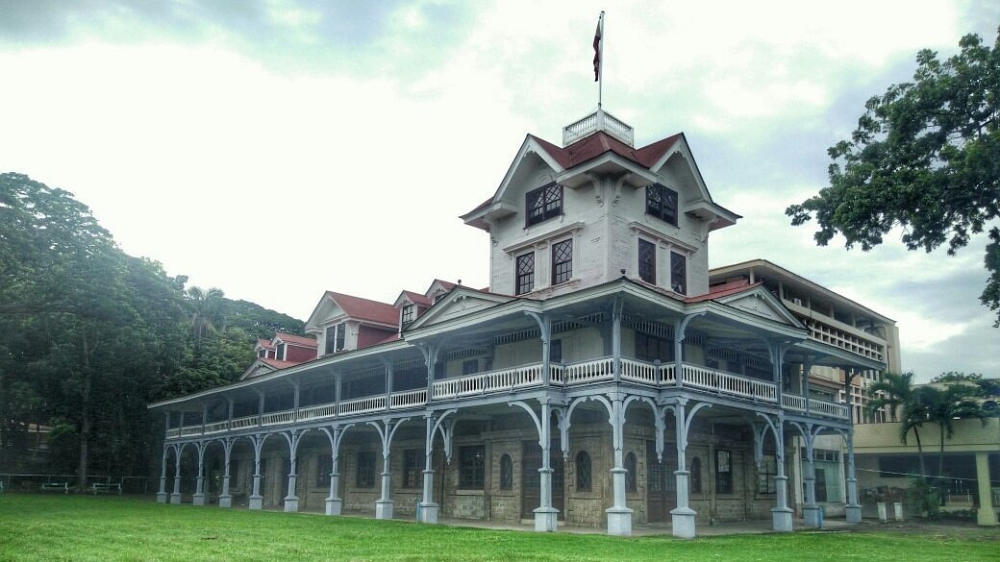
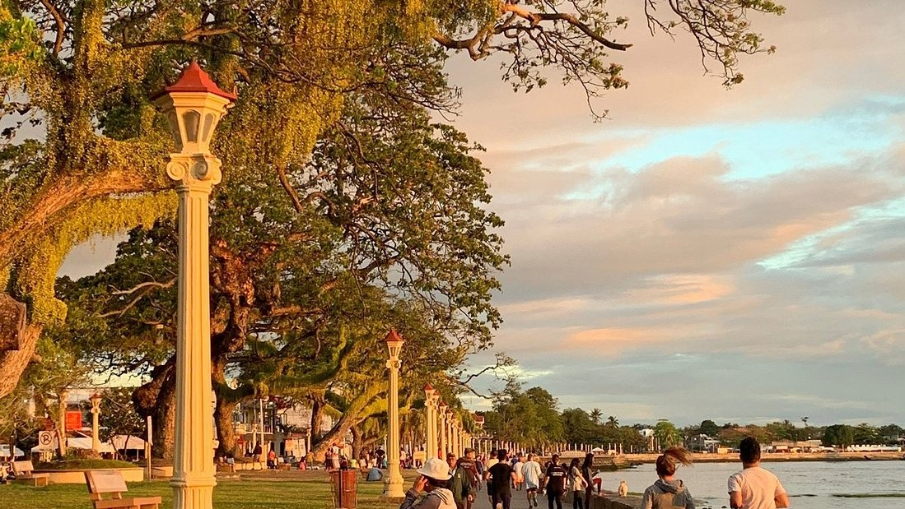

Right next to the Belfry Tower is the St. Catherine Cathedral, best known as the Dumaguete Cathedral.
Through the years, St. Catherine of Alexandria Cathedral has served as the centre of the city’s Catholic religion and faith. The Dumaguete Cathedral is also said to be oldest stone church in Negros with several reconstructions and extensions to the facade.
The Museum was established in 1970 by Dr. Hubert I. Reynolds, an American missionary member of the Christian Church (Disciples of Christ) and former Anthropology professor in Silliman University, to house the collection of the Cultural Research Center that started in 1964. The exhibits are rare and priceless collections of ethnological and archaeological artifacts which dates back as early as 500-200 B.C.


Rizal Boulevard is named after Dr. Jose Rizal, a man who is considered the national icon in the Philippines. In the 1880s, during Spain’s colonial rule of the Philippines, Dr. Rizal worked through non-violent action to expose many negative aspects of the Spanish rule and proposed governmental reforms to improve life for the Filipinos. Dr. Rizal was banished and eventually executed for his views on Spain’s rule of the Philippines, but his life and untimely death encouraged more Filipinos to seek independence from Spain. This is an excellent spot for anyone interested in the history of the Philippines.